KUET MATHEMATICS - III
SECTION B CLASS NOTE
Math 2123 | Exam-oriented, source-grounded study edition
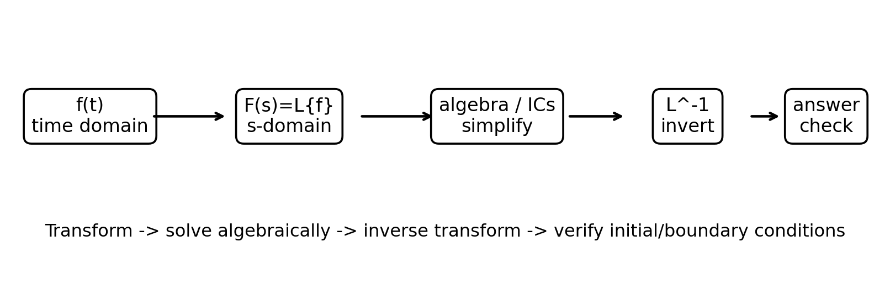
The Section B workflow: transform tools + vector differential/integral geometry.
Laplace • Inverse Laplace • Convolution • ODE/Beam • Vector Differential • Vector Integration
Credit: Made by K.I.Rohan
Prepared from the uploaded class notes, reference books and the Math 2123 question-bank analysis.
How to use this Section B note
| B5 |
Laplace fundamentals + direct transform |
Mandatory-level: fastest high-return formula set |
| B6 |
Inverse Laplace + convolution + ODE/beam |
High marks; longer algebra |
| B7 |
Vector differential calculus |
Short, standardized differentiation methods |
| B8 |
Line/surface/volume integration |
High-value but region setup matters |
Fast navigation
| B5 |
table + shifts + unit step + periodic + sin(at)/t |
Table -> Pattern -> Property |
| B6 |
inverse method choice + convolution + ODE + beam BC |
Factor -> Shift -> Convolve -> IC/BC |
| B7 |
grad/div/curl + directional derivative + surfaces + potential |
G-D-C + normalize first |
| B8 |
parameterization + flux + bounds + Green/Stokes/Gauss |
Curve-Surface-Volume + geometry first |
VERY HIGH PRIORITY | SAFEST ANCHOR
এই set-এর মূল skill হলো pattern recognition. Function দেখে আগে ঠিক করবেন: direct table, shifting, derivative/integral property, unit step, নাকি periodic formula লাগবে।
1. Definition and existence
| Piecewise continuous |
On every finite interval, only finitely many finite jumps are allowed. |
ভাঙা-ভাঙা হলেও finite jump |
| Exponential order alpha |
Eventually |f(t)| <= M e^(alpha t) for some M>0. |
exponential-এর চেয়ে দ্রুত না বাড়া |
| Sufficient condition |
Piecewise continuous + exponential order guarantees the transform for s>alpha. |
existence guarantee |
| 1 |
1/s |
constant |
| t^n |
n!/s^(n+1) |
power -> factorial |
| e^(at) |
1/(s-a) |
s shifts by a |
| sin at |
a/(s^2+a^2) |
sin -> a numerator |
| cos at |
s/(s^2+a^2) |
cos -> s numerator |
| sinh at |
a/(s^2-a^2) |
hyperbolic -> minus |
| cosh at |
s/(s^2-a^2) |
hyperbolic -> minus |
3. Property decision table
| sum / constant multiples |
Linearity |
L{af+bg}=aF+bG |
| e^(at) f(t) |
First shifting |
L{e^(at)f(t)}=F(s-a) |
| f(at), a>0 |
Scaling |
L{f(at)}=(1/a)F(s/a) |
| t^n f(t) |
Differentiate F(s) |
L{t^n f}=(-1)^n d^nF/ds^n |
| f'(t), f''(t), ... |
Derivative transform |
L{f'}=sF-f(0); extend recursively |
| integral from 0 to t |
Integral property |
L{∫_0^t f(u)du}=F(s)/s |
| f(t)/t |
Division by t |
L{f(t)/t}=∫_s^∞ F(u)du (when valid) |
| repeat every T |
Periodic formula |
[∫_0^T e^(-st)f(t)dt]/[1-e^(-sT)] |
| switch at t=a |
Unit step / 2nd shift |
u(t-a), e^(-as) factor |
4. Derivatives - initial conditions enter automatically
5. Unit step / Heaviside function
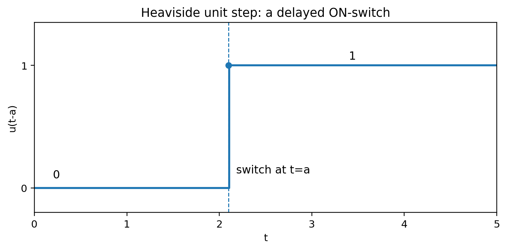
u(t-a) acts like an ON-switch at t=a.
Source-matched example: 2019 Q3(c) family
Question-bank compilation explicitly includes “Define unit step function and express a piecewise function in unit-step form.” তাই definition + step conversion একই সাথে practice করুন।
6. Periodic functions
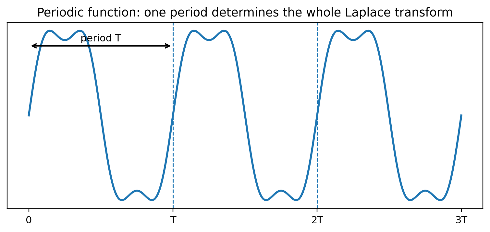
Only one period 0 to T is integrated; the denominator accounts for all repetitions.
1. Identify the smallest convenient period T.
2. Integrate only over one full period.
3. Keep the denominator 1-e^(-sT).
4. If the first period is piecewise, split only inside 0 to T.
7. High-priority existence pair: sin(at)/t vs cos(at)/t
For cos(at)/t, as t->0+, e^(-st)cos(at)/t behaves like 1/t. Therefore the defining improper integral diverges near zero, so its Laplace transform does not exist.
8. Source-matched direct example
Lecture example: f(t)=t/k for 0<t<k and f(t)=1 for t>k. Split the defining integral at t=k:
Matching questions from the question bank - B5
| 2019 Q3(b) |
Laplace transform definition |
★★★ |
| 2020 Q4(a) |
Laplace definition / core transform theory |
★★★ |
| 2022 Q5(a) |
Laplace transform definition |
★★★ |
| 2018 Q5(a) |
Sufficient conditions for existence |
★★★ |
| 2019 Q3(c) |
Unit step definition + piecewise representation |
★★★ |
| 2020 Q4(a) |
Piecewise/unit-step related Laplace family |
★★ |
| 2021 Q5(c) |
Delayed sine / unit-step family |
★★★ |
| 2015 Q7(c) |
Why L{cos(at)/t} does not exist |
★★★ |
| 2024 Q3(c)(ii) |
Same cos(at)/t existence question repeated |
★★★ |
| 2019/21/22/24 |
Periodic or piecewise transform families recur |
★★★ |
B5 rapid self-test
| e^(3t) sin 2t |
shift s -> s-3 in 2/(s^2+4) |
| t cos at |
-d/ds [s/(s^2+a^2)] |
| f(t) repeats every T |
periodic formula with denominator |
| piecewise switch at a |
unit step + e^(-as) |
| f'' with initial data |
s^2F - sf(0) - f'(0) |
VERY HIGH PRIORITY | LONG BUT STRUCTURED
SET B6 - Inverse Laplace, Convolution & ODE / Beam
এই set-এ সবচেয়ে বড় advantage হলো method selection. Denominator দেখে inverse method বেছে নিলে algebra অনেক কমে যায়। ODE/beam-এ transform নেওয়ার সঙ্গে সঙ্গে IC/BC লিখুন।
1. Inverse Laplace - method selector
| factorable rational function |
Partial fractions |
linear/repeated/quadratic factors |
| quadratic in shifted s |
Complete square + 1st shift |
(s-a)^2+b^2 |
| simple distinct denominator roots |
Heaviside expansion |
fast residues P(a_k)/Q'(a_k) |
| product of two known transforms |
Convolution |
F(s)G(s) |
| e^(-as)F(s) |
Second shifting / unit step |
time delay a |
2. Partial fractions and completing the square
Illustrative partial-fraction pattern
Shifted quadratic patterns
4. Convolution theorem
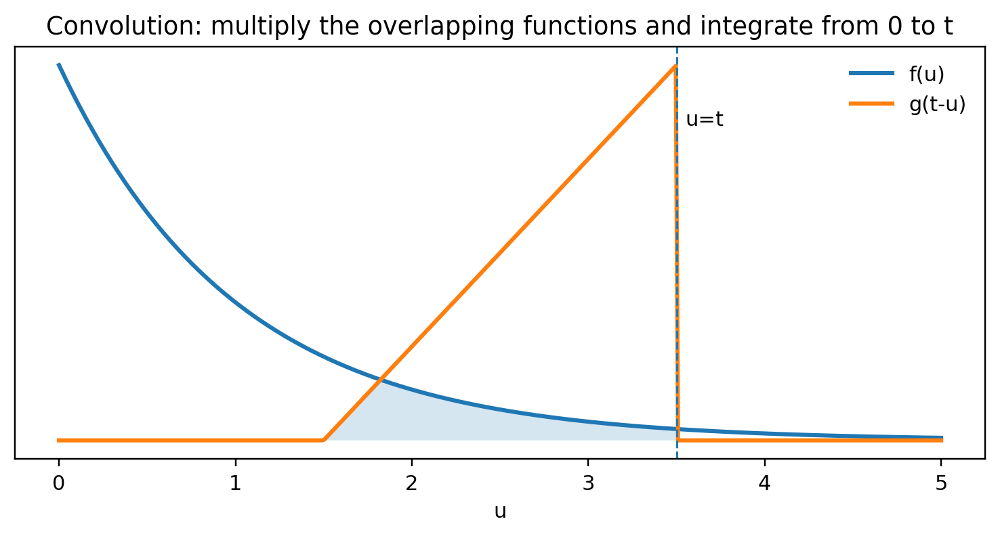
Convolution combines two known inverse transforms over 0<=u<=t.
Source worked example
For 1/[s(s^2+a^2)], use f(t)=1 and g(t)=sin(at)/a:
5. ODE by Laplace - repeatable workflow
For IVPs, the transform changes differential equations into algebraic equations in Y(s).
1. Let Y(s)=L{y(t)}.
3. Collect Y(s) terms and solve algebraically.
4. Use partial fractions/shifting/convolution to invert.
5. Check y(0), y'(0), etc. from the final answer.
Source-aligned IVP example
6. Beam deflection by Laplace
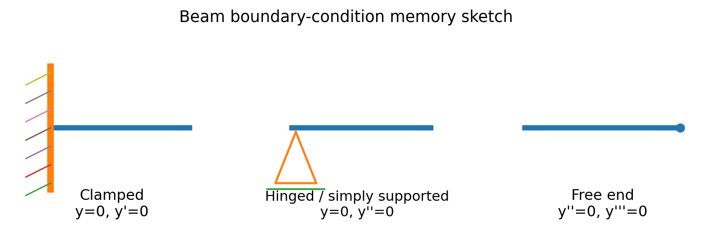
These boundary conditions are explicitly used in the uploaded beam compilation.
| Clamped / embedded |
y=0, y'=0 |
no deflection, no slope |
| Hinged / simply supported |
y=0, y''=0 |
no deflection, no bending moment |
| Free |
y''=0, y'''=0 |
no bending moment, no shear force |
Discontinuous load -> unit step
Then the transform automatically produces e^(-as) terms; after inverse transform they become shifted powers multiplied by u(x-a).
Continuous UDL, simply supported beam
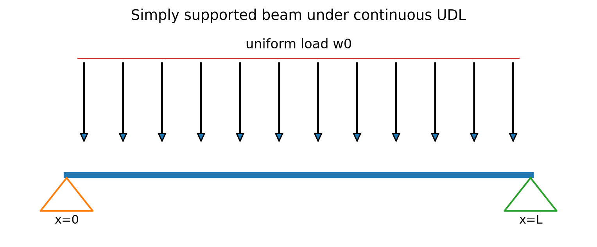
Reference geometry for the 2022 simply-supported continuous-UDL problem.
7. Beam question map from the uploaded compilation
| 2017 Q2(b) |
Cantilever: clamped-free |
Discontinuous UDL, 0<x<L/2 |
| 2018 Q6(b) |
Clamped-clamped |
Discontinuous triangular load |
| 2019 Q8(a) |
Clamped-simply supported |
Discontinuous UDL, 0<x<L/2 |
| 2022 Q7(a) |
Simply supported / hinged |
Continuous UDL |
Matching questions from the question bank - B6
| 2015-2025 |
Inverse Laplace of rational functions: near-annual family |
★★★ |
| 2015/18/19 |
Convolution-based inverse families |
★★★ |
| 2021-2025 |
Convolution variants continue in recent papers |
★★★ |
| 2016/17/19 |
ODE solved by Laplace |
★★★ |
| 2020-2025 |
IVP/forcing ODE variants recur |
★★★ |
| 2017 Q2(b) |
Cantilever beam by Laplace |
★★★ |
| 2018 Q6(b) |
Clamped beam with triangular/discontinuous load |
★★ |
| 2019 Q8(a) |
Mixed clamped-supported beam |
★★★ |
| 2022 Q7(a) |
Simply supported continuous UDL |
★★★ |
B6 rapid self-test
| e^(-3s)F(s) |
delay 3 -> unit step after inverse |
| (s-2)^2+9 |
first shift by +2 in time exponential e^(2t) |
| product F(s)G(s) |
consider convolution |
| 4th-order beam equation |
write four BC before algebra |
| simple distinct denominator roots |
Heaviside expansion may be fastest |
B6 last-minute error shield
| Partial fraction sign slips |
Substitute one easy s-value back into the decomposition to check. |
| Shift sign confusion |
F(s-a) <-> e^(at)f(t); F(s+a) <-> e^(-at)f(t). |
| ODE initial data lost |
Write derivative transform with ICs before simplifying. |
| Convolution variable confusion |
Use f(u)g(t-u), integrate u from 0 to t. |
| Beam constants wrong |
Apply all four BC only after the inverse transform/4 integrations are in hand. |
30-second inverse sanity checks
If F(s)~1/s as s->infinity, f(0+) is often finite/nonzero; if F(s) decays faster, f(0+) may be zero (initial-value theorem only when its hypotheses apply).
An e^(-as) factor must create a time delay and a unit-step factor in the inverse.
For real rational F(s), complex quadratic factors should combine into real sin/cos terms.
VERY HIGH PRIORITY | SHORT STANDARDIZED METHODS
SET B7 - Vector Differential Calculus
এই set-এ প্রায় সব problem-এর শুরু nabla operator দিয়ে। মূল habit: point substitute করার আগে symbolic grad/div/curl বের করুন; directional derivative-এ direction vector অবশ্যই unit করুন।
1. Nabla master table
| Gradient |
∇phi=(phi_x,phi_y,phi_z) |
scalar -> vector |
fastest increase / normal |
| Divergence |
∇·F=P_x+Q_y+R_z |
vector -> scalar |
source/sink strength |
| Curl |
∇×F |
vector -> vector |
local rotation |
| Laplacian |
∇^2phi=phi_xx+phi_yy+phi_zz |
scalar -> scalar |
div(grad phi) |
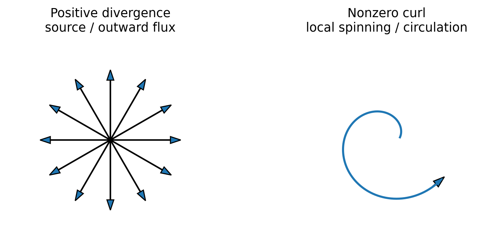
Divergence measures net spreading; curl measures local rotational tendency.
2. Gradient and directional derivative
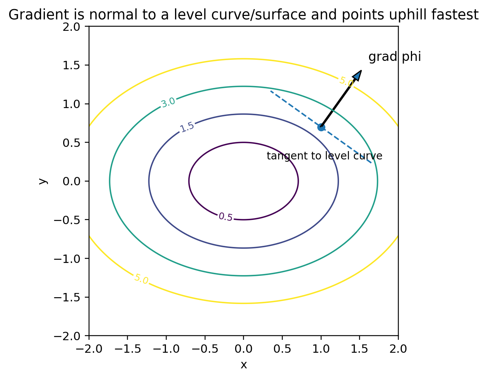
grad phi is perpendicular to phi=constant and gives the maximum rate direction.
Source example
phi=x^2-y^2+2z^2 at P(1,2,3), in direction from P to Q(5,0,4).
3. Level surface, tangent plane and normal line
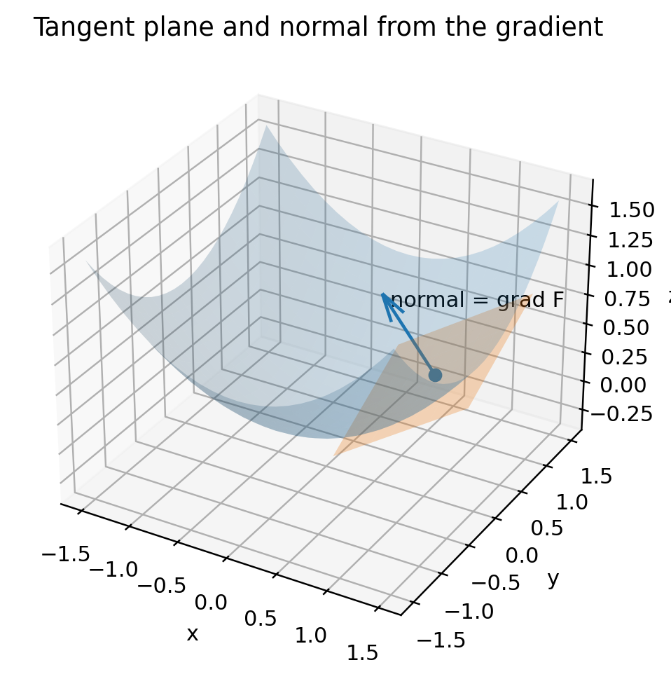
For F(x,y,z)=0, the gradient at P is normal to the tangent plane.
4. Angle between two surfaces
5. Solenoidal, irrotational and conservative
| Solenoidal |
div F = 0 |
net source/sink নেই |
| Irrotational |
curl F = 0 |
local rotation নেই |
| Conservative |
F = grad phi |
work path-independent; potential exists |
Potential-finding workflow
1. From phi_x=P integrate P with respect to x: phi=∫P dx + h(y,z).
2. Differentiate that phi with respect to y and compare with Q to find h_y.
3. Integrate h_y in y, leaving a function of z.
4. Use phi_z=R to determine the remaining function.
5. Add an arbitrary constant C.
6. Physical meanings of grad, div and curl
| grad phi |
Direction of greatest increase; magnitude is max rate; normal to level surface. |
gradient = steepest ascent |
| div F |
Net outward flux per unit volume; positive source, negative sink. |
divergence = source strength |
| curl F |
Axis/magnitude of local rotational tendency; for rigid rotation v=omega×r, curl v=2omega. |
curl = local spin |
7. High-value vector identities
| ∇×(∇phi)=0 |
curl grad = 0 |
| ∇·(∇×F)=0 |
div curl = 0 |
| ∇·(phi F)=∇phi·F + phi(∇·F) |
product rule: div |
| ∇×(phi F)=∇phi×F + phi(∇×F) |
product rule: curl |
| ∇^2phi=∇·(∇phi) |
Laplacian = div grad |
Matching questions from the question bank - B7
| 2015 Q5(c) |
Physical meaning of gradient and divergence |
★★★ |
| 2016/17/19 |
Directional derivative / maximum-rate family |
★★★ |
| 2020/22/23 |
Directional derivative variants continue |
★★★ |
| 2015/16/18 |
Angle between / orthogonal surfaces |
★★★ |
| 2021/22/23 |
Surface-angle / normal geometry variants |
★★★ |
| 2015,17-19 |
Solenoidal / irrotational / potential family |
★★★ |
| 2021-23 |
Conservative-field/potential variants |
★★★ |
| 2016/17/21-22 |
Tangent plane / normal line family |
★★★ |
| Multiple years |
Vector identities involving grad/div/curl |
★★ |
B7 rapid self-test
| maximum rate |
|grad phi| |
| direction of max rate |
grad phi / |grad phi| |
| orthogonal surfaces |
grad F dot grad G = 0 |
| solenoidal |
div F=0 |
| irrotational |
curl F=0 |
| normal to F=0 |
grad F |
VERY HIGH PRIORITY | GEOMETRY FIRST
SET B8 - Vector Integration: Line, Surface & Volume
এই set-এর arithmetic-এর চেয়ে setup বেশি গুরুত্বপূর্ণ। Sketch -> parameter/bounds -> integrand - এই order বজায় রাখলে ভুল কমে।
1. Integral-type master map
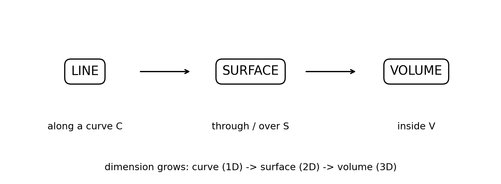
Think dimension first: curve, surface or volume?
| Line / work |
∫_C F·dr |
work / circulation along a path |
| Scalar line |
∫_C f ds |
scalar accumulation along curve length |
| Surface flux |
∬_S F·n dS |
flow through a surface |
| Volume |
∭_V f dV |
total quantity inside a 3D region |
2. Line integral / work done - universal algorithm
1. Parameterize the curve: r=r(t), a<=t<=b.
2. Compute dr=r'(t)dt.
3. Substitute F(r(t)).
4. Take the dot product F(r(t))·r'(t).
5. Integrate with the correct orientation.
Repeated 2016 Q7(b) & 2017 Q4(c)
For A=(2y+3)i + xz j + (yz-x)k from O to (2,1,1):
| Three straight segments |
O->(0,0,1)->(0,1,1)->(2,1,1) |
10 |
| One straight segment |
x=2t, y=t, z=t, 0<=t<=1 |
8 |
3. Green theorem - closed planar curve
Question-bank examples
2018 Q8(b) and 2019 Q6(b) both use triangular closed paths; 2023 Q2(a) asks circulation around a circle and reduces immediately to area via Green theorem.
4. Surface flux
| z=g(x,y), upward |
n dS = (-g_x,-g_y,1) dxdy |
| x=g(y,z), +x direction |
n dS = (1,-g_y,-g_z) dydz |
| implicit G(x,y,z)=0 |
normal direction is grad G; choose orientation carefully |
2015 Q7(a) source example
F=yz i + zx j + xy k over the unit sphere in the first octant. On x^2+y^2+z^2=1, outward n=(x,y,z), so F·n=3xyz. With spherical coordinates:
5. Stokes and Gauss - theorem selector
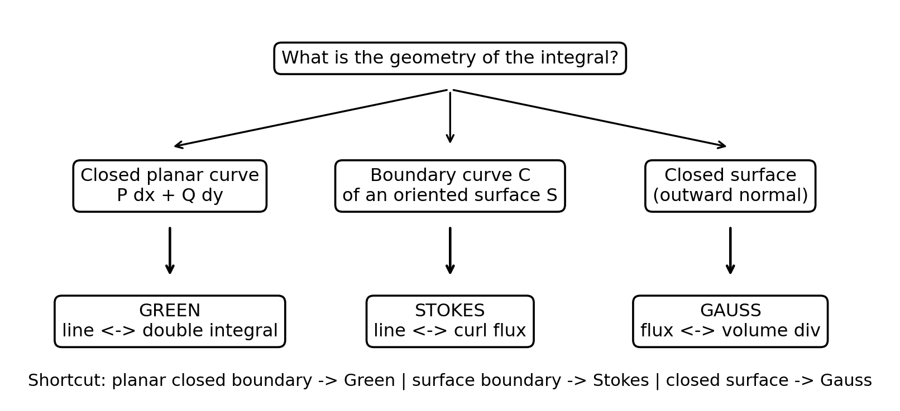
Select the theorem from geometry before integrating.
6. Volume integral and coordinate systems
| Cartesian |
x,y,z |
dV=dx dy dz |
| Cylindrical |
x=r cos theta, y=r sin theta, z=z |
dV=r dr dtheta dz |
| Spherical |
x=rho sin phi cos theta, y=rho sin phi sin theta, z=rho cos phi |
dV=rho^2 sin phi drho dphi dtheta |
Region setup rule
1. Sketch the solid / projection first.
2. Choose coordinates that match symmetry: cylinder -> cylindrical; sphere/cone -> spherical often helps.
3. Write inner-variable bounds from surfaces.
4. Write outer bounds from the projection.
5. Only then substitute the integrand and Jacobian.
7. Closed-surface source example: 2021 Q3(a)
The compiled question uses a quarter cylinder x^2+y^2<=9 in the first quadrant, 0<=z<=2. For q=4yx i -2y^2 j -z^2 k:
8. Exact question map from the vector-integration compilation
| Line / work |
2015 Q6(c); 2016 Q7(b); 2017 Q4(c) |
spiral + piecewise/straight paths |
| Green / circulation |
2018 Q8(b); 2019 Q6(b); 2023 Q2(a) |
triangle/circle closed path |
| Work variants |
2020 Q2(b); 2021 Q2(c); 2022 Q2(c); 2024 Q2(a)(ii) |
curved/parametric path |
| Surface flux |
2015 Q7(a); 2018 Q8(c); 2019 Q6(c); 2021 Q3(a) |
sphere/cylinder/plane/closed surface |
| More surface flux |
2022 Q3(a); 2023 Q2(b); 2024 Q2(b) |
recurring flux geometry |
| Volume integrals |
2016 Q7(c); 2019 Q7(a); 2021 Q3(b); 2022 Q3(c); 2023 Q3(a); 2024 Q2(c) |
bounded 3D regions |
Matching questions from the question bank - B8
| 2015 Q6(c) |
Line integral on a spiral |
★★ |
| 2016 Q7(b) / 2017 Q4(c) |
Same field: piecewise path vs direct straight path |
★★★ |
| 2018 Q8(b) |
Green theorem on triangle |
★★★ |
| 2019 Q6(b) |
Green theorem triangle variant |
★★★ |
| 2020 Q2(b) / 2024 Q2(a)(ii) |
Work along constrained curve |
★★★ |
| 2021 Q3(a) |
Closed-surface flux; Gauss theorem |
★★★ |
| 2015 Q7(a) |
Sphere first-octant surface flux |
★★★ |
| 2018 Q8(c) / 2023 Q2(b) |
Cylinder surface-flux family |
★★★ |
| 2016/19/21-24 |
Volume-integral families |
★★★ |
B8 rapid self-test
| closed planar C |
Green |
| C is boundary of surface S |
Stokes |
| closed surface |
Gauss |
| straight segment A->B |
r=A+t(B-A) |
| sphere / cone symmetry |
consider spherical |
| cylinder symmetry |
consider cylindrical |
LAST-REVISION PAGES
Section B Formula Sheet & Final Strategy
1. One-page Laplace essentials
| Definition |
L{f}=∫_0^∞ e^(-st)f(t)dt |
| Powers |
L{t^n}=n!/s^(n+1) |
| Trig |
L{sin at}=a/(s^2+a^2); L{cos at}=s/(s^2+a^2) |
| First shift |
L{e^(at)f}=F(s-a) |
| Second shift |
L{u(t-a)f(t-a)}=e^(-as)F(s) |
| Derivative |
L{f''}=s^2F-sf(0)-f'(0) |
| Integral |
L{∫_0^t f}=F/s |
| Multiply t^n |
L{t^n f}=(-1)^n F^(n)(s) |
| Periodic |
L{f}=[∫_0^T e^(-st)f dt]/[1-e^(-sT)] |
| Convolution |
L^-1{FG}=∫_0^t f(u)g(t-u)du |
2. One-page vector essentials
| Gradient |
grad phi=(phi_x,phi_y,phi_z) |
| Directional derivative |
D_u phi=grad phi·u-hat; max=|grad phi| |
| Divergence |
div F=P_x+Q_y+R_z |
| Curl |
curl F=grad×F |
| Tangent plane |
grad F(P)·(r-P)=0 |
| Angle surfaces |
cos theta=|grad F·grad G|/(|grad F||grad G|) |
| Line work |
∫_C F·dr |
| Green |
∮Pdx+Qdy=∬(Q_x-P_y)dA |
| Stokes |
∮F·dr=∬curlF·n dS |
| Gauss |
∬F·n dS=∭divF dV |
3. Proof / theory priority list
| A |
Laplace definition + sufficient existence conditions |
direct short-question family |
| A |
Linearity / first shifting / derivative-transform proofs |
core lecture properties |
| A |
Unit step definition + second shifting usage |
recurs with piecewise functions |
| A |
Why L{cos(at)/t} does not exist |
direct 2015/2024 repeat |
| A |
Convolution theorem statement + application |
high-frequency inverse method |
| A |
Physical meaning of gradient/divergence/curl |
short theory + intuition |
| A |
curl grad=0, div curl=0 |
common vector-identity proof |
| A |
Green / Stokes / Gauss statements + orientation conditions |
integration theorem selection |
4. Common mistakes to eliminate
| Using a non-unit direction in directional derivative |
normalize the direction first |
| Forgetting 1-e^(-sT) in periodic transform |
write theorem before integration |
| Wrong sign in first shift |
e^(at)f(t) -> F(s-a) |
| Treating curl=0 as conservative without domain condition |
mention simply connected domain |
| Mixing unit normal with vector area element |
choose one approach only |
| Using Gauss on an open surface |
Gauss requires closed surface; close it or use direct flux |
| Wrong Stokes orientation |
right-hand rule links boundary direction and normal |
| Missing Jacobian r or rho^2 sin phi |
write dV before bounds |
| Beam BC memorized incorrectly |
use clamp y,y-prime; hinge y,y-double-prime; free y-double-prime,y-triple-prime |
5. Final 3-set decision
| Balanced / safer default |
B5 + B7 + strongest of B6/B8 |
B5 and B7 are short, reusable anchors |
| Strong in Laplace algebra |
B5 + B6 + B7 |
avoids long 3D integration setup |
| Strong in vector geometry/integration |
B5 + B7 + B8 |
avoids beam/ODE algebra |
| B6 beam looks unfamiliar in exam |
B5 + B7 + B8 |
switch to vector route |
| B8 region/bounds look ugly |
B5 + B6 + B7 |
switch to Laplace route |
6. Source basis used for this note
Math 2123 Question Bank Analysis (Made by K.I.Rohan) - B5-B8 topic distribution and repetition priorities.
Laplace Lec - 02/03/04/05 - standard table, direct piecewise method, shifting, derivatives, integrals and periodic formula.
Theory and Problems of Laplace Transforms - Murray R. Spiegel - existence, inverse methods, convolution and ODE applications.
kuet-math3-unit-step-functions.pdf - 2015-2024 unit-step / piecewise exam compilation.
kuet-math3-beam-deflections.pdf - governing equation, boundary conditions and 2017/2018/2019/2022 beam questions.
kuet-math3-theory-and-proofs.pdf - Laplace theory plus gradient/divergence theory and vector proof families.
1.-H.K.-Dass-Advanced-Engineering-Mathematics.pdf - vector differential calculus and transform reference formulas.
kuet-math3-vector-integrations.pdf - 2015-2024 line, surface and volume integration questions and verified worked solutions.